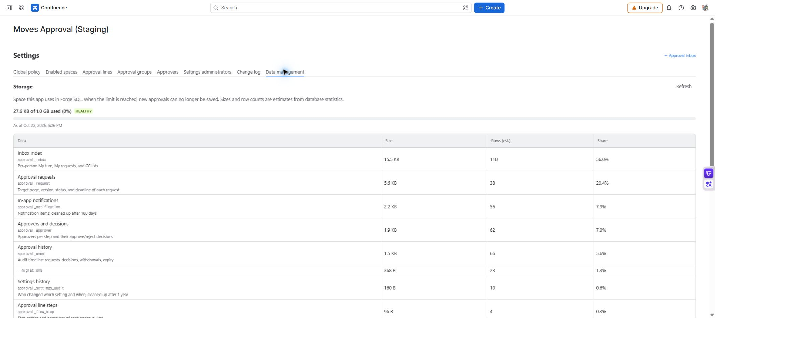

데이터 보관·내보내기와 변경 이력
저장 사용량을 확인하고, 보관 기간이 지난 종료 기록을 내보낸 뒤 정리합니다. 앱 관리자만 사용할 수 있으며 삭제는 되돌릴 수 없습니다.
경로: 설정 → 데이터 관리. 설정 작업 기록은 변경 이력에서 확인합니다.
저장 공간 확인
현재 사용량과 화면에 표시된 한도를 비교합니다. 현재 앱은 1 GiB를 기준으로 표시하며 80% 이상은 주의, 90% 이상은 위험입니다. 크기와 행 수는 통계 기반 추정치이므로 새로 고침 후 기준 시각도 함께 확인합니다.
기록을 내보내고 정리하기
- 조직의 기록 보관 규정에 맞춰 보관 기간을 선택합니다. 무기한 또는 1·3·5·10년이며 기본은 3년입니다.
- 기간이 지난 기록의 건수와 가장 오래된 날짜를 확인합니다. 진행 중 요청은 정리 대상이 아닙니다.
- 엑셀로 내보내기를 누르고 다운로드 완료를 기다립니다.
- 파일을 열어 결재 요청·결재선·이력 3개 시트를 확인하고 조직의 보관 위치에 저장합니다.
- 화면의 마지막 내보내기 날짜·건수와 파일을 대조한 뒤 내보낸 N건 삭제를 선택합니다. 확인 창에서 대상을 다시 확인하고 삭제합니다.
- 처리 결과와 남은 대상 건수, 변경 이력을 확인합니다.

MA-20 · 이 화면에는 저장 공간 사용량과 예상 행 수가 보입니다. 보관 기간·내보내기·삭제는 아래로 내려 확인합니다.
보관과 삭제의 범위
| 데이터 | 처리 |
|---|---|
| 종료된 결재 기록 | 기간이 지나도 자동 삭제하지 않습니다. 내보내기를 확정한 범위만 직접 삭제합니다. |
| 진행 중 요청 | 보관 기간 정리에서 제외됩니다. |
| 요청에 연결된 결정·이력·업무함·알림 | 요청 삭제 시 함께 정리됩니다. |
| 앱 내 알림 | 180일 경과 후 자동 정리됩니다. |
| 설정 변경 이력 | 1년 경과 후 자동 정리됩니다. |
내보낸 뒤 새로 기간을 넘긴 기록은 이전 삭제 범위에 포함되지 않습니다. 함께 정리하려면 다시 내보냅니다. 업무함의 목록 Excel과 이 화면의 보관 기록 내보내기는 범위와 시트 구성이 다릅니다.
확정된 내보내기 범위는 내보낸 사람이 아닌 다른 앱 관리자도 삭제할 수 있습니다. 내 권한으로 볼 수 없는 페이지의 기록은 내보내기·삭제에서 빠지지만, Confluence에서 완전히 삭제된 페이지(휴지통 비우기·스페이스 삭제)의 기록은 포함되며 문서 제목·요청 메모·반려·회수 사유를 비워서 내보냅니다.
변경 이력 읽기
변경 이력에서 시각·사용자·영역·동작·내용을 읽습니다. 전역 정책, 스페이스, 결재선·그룹·명부·관리자 변경과 보관 기간 변경·내보내기·정리가 기록됩니다. 개별 요청의 결정 이력은 이 화면이 아니라 해당 요청의 감사 타임라인에 있습니다.
삭제 버튼이 비활성이면 먼저 해당 범위의 내보내기가 완료됐는지 확인합니다. 보존이 필요한 자료를 확보하지 않은 상태에서 삭제를 진행하지 마세요.